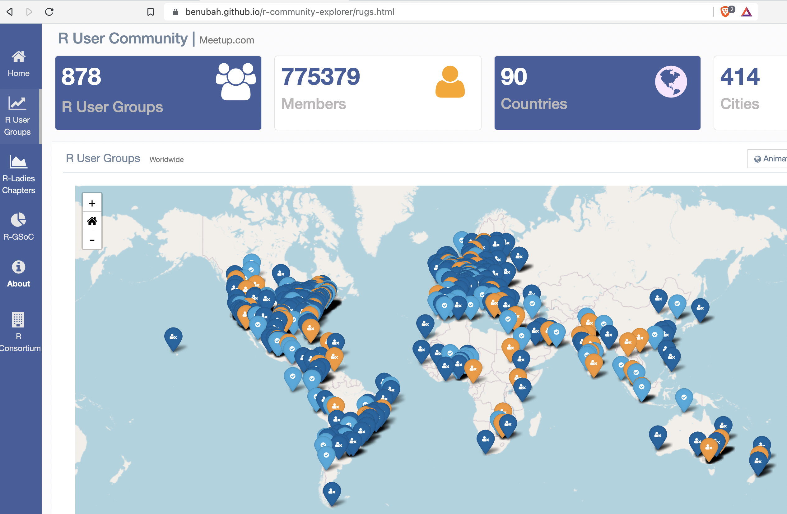

9 Community
Besides the free-of-license-costs argument, the open source community may be the most popular argument in favor of open source software. And the added value of the community is almost certainly much more valuable than a few green bucks saved on licenses. The support of some of the best communities is so good it may very well outperform an internal IT department specialized elsewhere. Still, developer communities do have their idiosyncrasies. This section intends to help overcome entry barriers and encourage the reader to connect to the developer communities – even if one is not a regular active contributor.

The above figure shows a screenshot of an interactive community explorer tool for the R community. Users can explore user groups and such as R user groups or R Ladies chapters around the world. At the time of writing the tool counted more than 775’000 members of R user groups world wide and more than 100’000 members of RLadies. The explorer tool and its numbers should not only show you the size of the community but also help to connect to what has become a very global community.
Apart from user groups of programming languages the Society of Research Software Engineering is a good way to connect. In addition to the UK based origin the society has expanded to other countries and has derivatives in, e.g., the United States or Germany. The main idea of research software engineering societies is to work on a role of software engineering in academia that accounts for the importance and impact of software on modern research. This goes from education in programming to lobbying for acknowledgement of software engineering in academic resumes.
The below sections introduce different channels to connect and interact with the community. Of course, one does not have to use all of these tools and be active in all of these communities but rather pick some that suit our way of communication.
9.2 Knowledge Sharing Platforms
The most popular knowledge sharing platform for programmers, stackoverflow.com has made itself a name for being the first hit in your favorite search engine to any questions or error message remotely related to source code. The platform has accumulated millions of questions AND answers to programming questions across languages. Through a mix of quality content, a community rating system and a healthy mix of gamification the platform managed to become a mainstay of the programming community. The platform’s crowd based rating system does not only assess the quality of questions and answers, a solid stackoverflow score and reach has also become a notch on programmers’ resumes. CITE AER here
9.3 Look Out for Local Community Group
Speaking of job market opportunities, look out for a local R, Python or data science user group. Local user groups around programming languages do not only host interesting talks or other formats, they often provide an opportunity to network or even have dedicated time to advertise open positions. Besides the community explorer mentioned in the introduction of this chapter, the meetup platform that has become synomimous with special interest groups coming together locally, is a good place to start your research.
9.4 Attend Conferences - Online Can Be a Good Option !
In similar fashion conferences are a good channel to stay connected and up to date. A conference like PiConf, RStudio Conf or useR! is basically a bulk meetup: potentially hundreds of talks, thousands of potential contacts and quite a bit of time to digest a large conference. In recent years conference often provide an option to attend online. While to some most of the fun and networking will be missing online, the ability to attend online can also be great chance for a conference and its attendance. Online conferences have the chance to be a lot more inclusive than its in-person counterparts. Even costs aside, i.e., covered by scholarships, many cannot afford the time to leave their jobs and families to travel internationally for an entire week. Online conferences also give people a chance to attend who may be not involved enough to attend a software development conference for an entire week, but are interested to catch a glimpse and to evaluate. In any case, the entry hurdle is lower than ever. These paragraphs are meant to convinve take your time, to prepare, attend and debrief a major open source software conference – online or in-person.
9.5 Join Slack Spaces (or other Chats)
Community chat spaces run by conference organizers, local user groups or societies are another way to stay connected to the community. More dynamic than message boards and forums, chats allow for both async and live communication. Usually chat spaces are more domain or even topic specific than local meetups or social media. Popular software to particapte or even run an own community are Slack, Discord, Mattermost or Matrix. Slack is available as a service run by a company of the same name. Slack users can start new workspaces for free for hundreds of members, but will have to pay when they want to keep their communities messages beyond the last 10’000 messages. Just like Slack, Discord works in our web browsers or as a standalone Desktop or mobile client. Popular among gamers, Discord does not quite have the business attire of Slack but certainly has its fans. Mattermost is an open source alternative to the former two. It is also available as a service, but is rather known as a package to self-host one’s own independent chat space. Matrix has a different approach, labelling itself an open network for secure, decentralized communication. Reminiscant of the Internet Relay Chat (IRC) of the old days, matrix is server software and network of the same name. Just like IRC, matrix is not bound to a single client and therefore appears modular to the endusers allowing to choose between different clients such as Element to connect to established and self hosted networds alike.